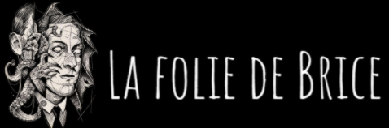
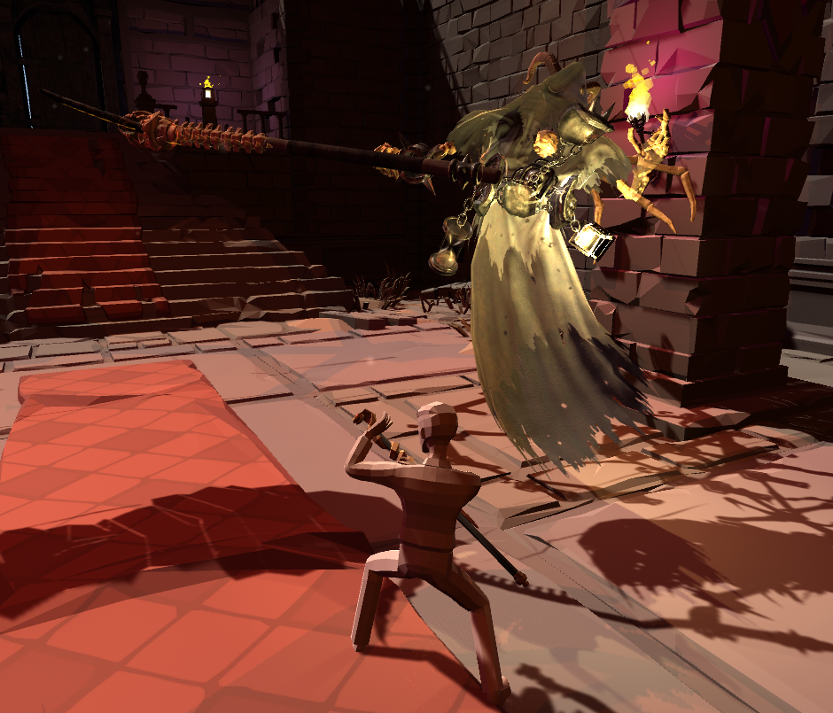
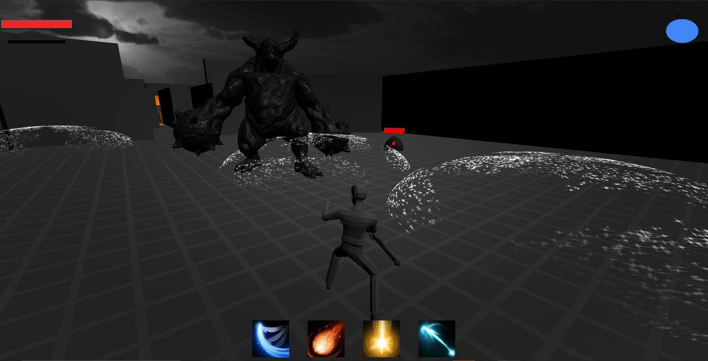

La Folie de Brice est un Action-RPG 3D développé sur Unity par une équipe de 4 personnes personnes en 3 mois. Votre objectif sera de jouer avec les frontières de votre folie pour débarasser une ville aux inspirations victoriennes de créatures lovecraftiennes, les Eldritchs
Dans La Folie de Brice, vous contrôlez votre niveau de folie en combattant. Prendre des coups vous rendra moins sain d'esprit mais plus puissant et réceptif à la présence des Eldritchs. Attention toutefois à ne pas dépasser vos limites, sans quoi les créatures de votre esprit viendront se méler au combat elles aussi, rongeant alors votre santé physique.
Vos aventures dans les quartiers de la ville vous méneront aussi à rencontrer des humains, qui seront plus ou moins hostiles envers vous selon votre santé mentale. D'autres créatures chercheront à vous barrer la route et vous affronteront sous la forme de combats de boss.
 